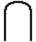
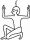

Utiliser notre convertisseur pour convertir des chiffres arabes vers egyptients
Informations sur le convertisseur de chiffres égyptiens
Le convertisseur de chiffres égyptiens permet de convertir des chiffres « normaux » entre 0 et …. en chiffres égyptiens ou vice versa.
Chiffres égyptiens
Les chiffres égyptiens sont basés sur les symboles 𓏺, 𓎆, 𓍢, 𓆼, 𓂭, 𓆐, 𓁨 chacune représentant une valeur particulière. Ils peuvent être combinés pour former n'importe quel nombre. Aujourd'hui, les chiffres égyptiens ne sont plus très utilisés
| Symbole | Valeur | Nom |
|---|---|---|
| 1 | Bâton/barre | |
|  | 10 | Anse/joug/pont |
| 100 | Corde/spirale | |
| 1 000 | Fleur de lotus | |
 |
10 000 | Doigt |
 |
100 000 | Têtard |
|  | 1 000 000 | Heh/Dieu |
Comment écrire un nombre en chiffres égyptiens ?
Le système de numération égyptien était additif (la position n'importe pas) et décimal (en base 10). Pour écrire un nombre, les Égyptiens avaient à disposition 7 signes/chiffres ayant tous pour valeur une puissance de 10 qui devait être répété autant de fois que nécessaire : Exemple : 123 s'écrit 𓍢𓎆𓏺𓏺𓏺 Attention : Le chiffre zéro n'existe pas dans ce système, la non-présence d'un symbole indique qu'il y en a 0. Exemple : 2001 s'écrit 𓆼𓆼𓏺
Comment convertir un nombre égyptien en chiffres arabes ?
Repérer chaque symbole égyptien et additionner leurs valeurs en nombres arabes, la somme obtenue est résultat de la conversion. Exemple : 𓍢𓍢𓏺𓏺𓏺 s'écrit avec 2 fois 𓍢 qui est le symbole pour la valeur 100 et 3 fois 𓏺 qui est le symbole pour la valeur 1. La somme vaut 2 × 100 + 3 × 1 = 203